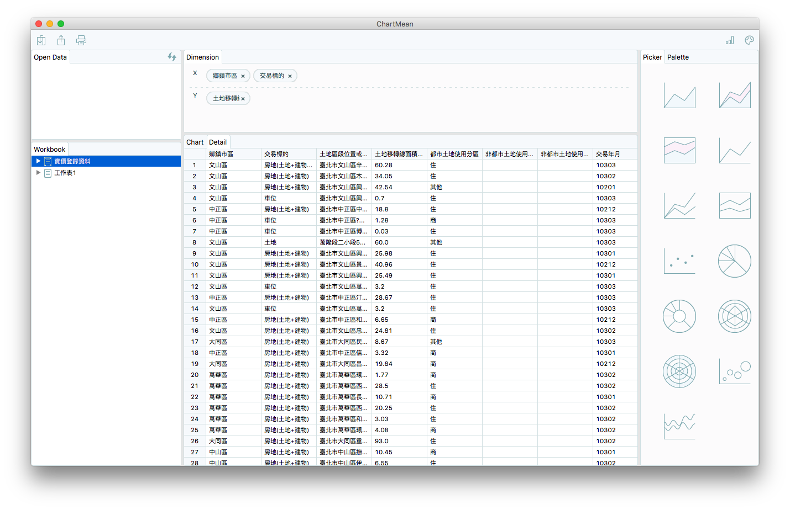
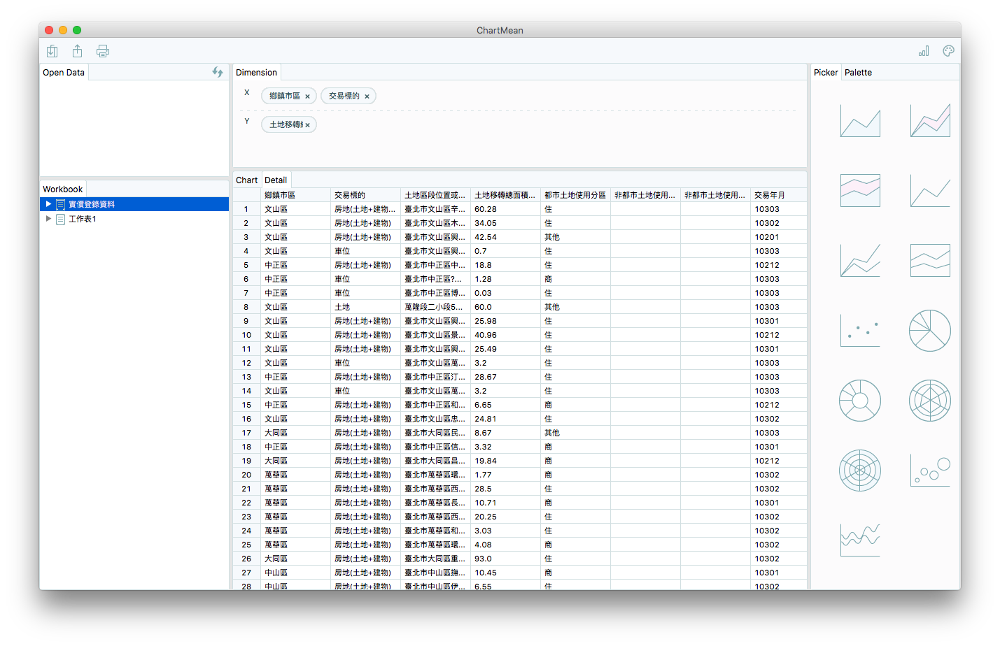
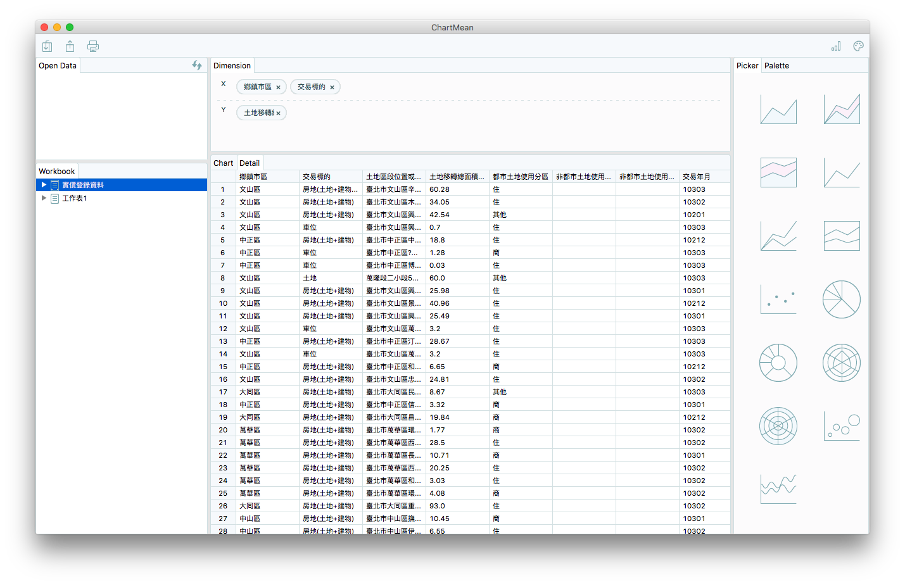

我是林承毅，1988年屏東出生，都在南部就學，就業期間到台北兩年。
習慣 Mac, Linux 平台，熟悉 C, Java, NodeJS, 開發過 Linux Driver, application server。 喜歡 Web, ReactJS 技術開發跨平台產品。
閒暇之餘，學習如何用 python 分析股票和爬資料，使用 MariaDB, MongoDB 存交易資料, 對 numpy, pandas, matplotlib 有些基礎， 規劃未來繼續往 Machine Learning 深入。
DevOps 部分，在 Linux 使用 Jenkins, Git, Docker, Redmine, Nexus 架設開發環境。 熟悉語言編譯, 套件管理系統, 例如：Makefile, Maven, npm, Webpack ... 等。
實作TradeStation公司開發的程式交易語言(EasyLanguage), 範例如下：
if the Close > High of 1 bar ago then Buy next bar at market;
相關技術：
從資料源接收即時成交資料，處理後透過 TCP, HTTP, WebSocket 送給 Client。
相關技術：
協助客戶分析資料，導入資料後圖形化顯示。
相關技術：

業餘時間開發小品。demo
相關技術：


相關技術：

相關技術：

前端排版動畫練習
使用 CUDA 平行化 Aho-Corasick, Wu-Manber 兩種字串搜尋演算法，並比較其優缺點。
以DVB為網際網路骨幹實作 (Implementation of IP over DVB as an Internet Backbone)
實作 Linux netdevice driver 控制 it950x(DVB裝置) 接收發送 IP 封包，可以執行 IP Layer 之上的應用，例如：TCP, UDP。